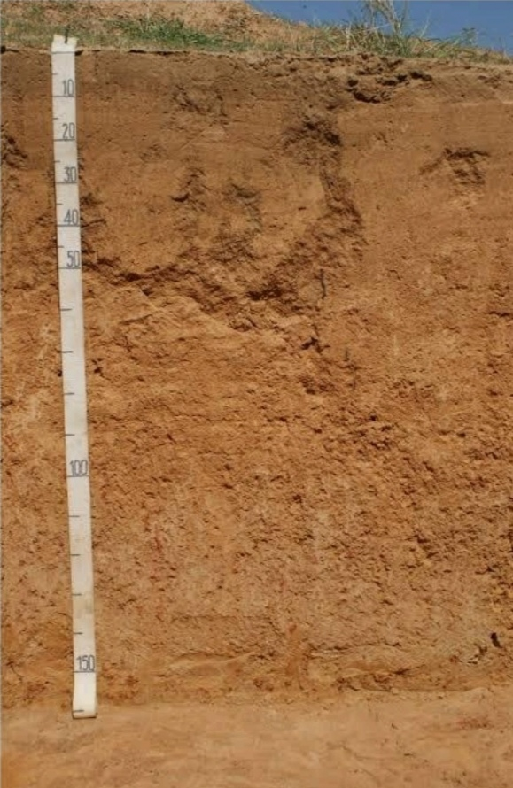

Ferramentas
Enxada
Utilizada para cavar a terra, aerar o solo e remover ervas daninhas.
https://images.app.goo.gl/bZrM9sXR4p5t6L9DA
Ver maisRegador
Utilizado para regar as plantas de forma controlada.
https://images.app.goo.gl/ohQydQLKzfF7Bt5q8
Ver maisTesoura de Poda
Ferramenta de corte utilizada para podar plantas e árvores.

https://images.app.goo.gl/5o439uhYFtqpnfN6A
Ver maisSacho
Serve para capinar e preparar o solo para o plantio.
https://images.app.goo.gl/pUnqJdRsNJARKr5o6
Ver maisLuvas de Jardinagem
Protegem as mãos durante o manuseio de plantas, evitando ferimentos.

https://images.app.goo.gl/b1hohtuJTmfSeFFu7
Ver maisCarrinho de Mão
Auxilia no transporte de terra, plantas e ferramentas no jardim.
https://images.app.goo.gl/fhU6XyJsinZLLP2SA
Ver maisSementes
Arroz
O arroz é um dos alimentos mais consumidos no mundo, sendo uma importante fonte de carboidratos para grande parte da população global.
https://images.app.goo.gl/r17tx8dDekwFb3DQ8
Ver maisSoja
A soja é uma leguminosa rica em proteínas e amplamente cultivada para diversos fins, como produção de óleo, ração animal e alimentos humanos.
https://images.app.goo.gl/TYQvdEDzDEJ8a4oz8
Ver maisFeijão
O feijão é uma leguminosa rica em proteínas e fibras, sendo um alimento básico em muitas dietas ao redor do mundo.

https://images.app.goo.gl/frbb1zqQVjSMjQYA8
Ver maisMilho
O milho é um grão amplamente cultivado, utilizado para alimentação humana, animal e produção de biocombustíveis.
https://images.app.goo.gl/srcGVieaK8fH7ReK6
Ver maisTrigo
O trigo é um cereal essencial na alimentação humana, sendo utilizado na produção de farinha para pães, massas e diversos alimentos.
https://img.freepik.com/fotos-premium/mao-do-semeador-com-sementes-de-trigo_69477-70.jpg?w=360
Ver maisAlgodão
O algodão é uma fibra vegetal utilizada na produção de tecidos e materiais têxteis, além de óleo e ração animal.
https://images.app.goo.gl/QYKHkMq3HmXBJrcMA
Ver maisCafé
O café é uma bebida popular feita a partir dos grãos torrados da planta de café. É amplamente consumido e cultivado em diversas regiões do mundo.

https://images.app.goo.gl/u7PXrgKdyDRPnTze6
Ver maisCana-de-açúcar
A cana-de-açúcar é uma planta utilizada na produção de açúcar, etanol e outros produtos derivados.
https://images.app.goo.gl/WtRNAZ7QCZVpp6Li9
Ver maisGirassol
O girassol é uma planta cujas sementes são ricas em óleo comestível e são utilizadas na alimentação humana e animal, assim como na produção de biodiesel.

https://images.app.goo.gl/C9Q5VdzzBvFwjSKa6
Ver maisSorgo
O sorgo é um cereal cultivado principalmente para alimentação animal, produção de etanol e outros usos industriais.
https://images.app.goo.gl/ZRQw6XE6bgfVtnB46
Ver maisSolos
Latossolo
Solos profundos, bem drenados, ácidos, ricos em ferro e alumínio.
]https://images.app.goo.gl/Ykn8SmqDmwvXzNbk8
Ver maisArgissolo
Solos com horizonte B textural, bem drenados, e variáveis em fertilidade
https://images.app.goo.gl/2rwpTwdw9njTkobU9
Ver maisNitossolo
Solos avermelhados, bem estruturados e férteis.
https://images.app.goo.gl/jofprBWbwGh18Pk96
Ver maisNeossolo
Solos rasos, geralmente sobre rochas, com baixa capacidade de retenção de água e nutrientes.
https://images.app.goo.gl/Vp2NpNMT2MpZmQGQ9
Ver maisAdubos
Adubo Orgânico
Feito de matéria orgânica como esterco e compostagem.
Melhora a estrutura e fertilidade do solo.
https://images.app.goo.gl/sG7tMiBi2j8Bayqf7
Ver maisAdubo Mineral
Contém nutrientes como ureia e superfosfato.
Fornece nutrientes específicos rapidamente.
https://images.app.goo.gl/73SbsebDcLvQRSc58
Ver maisAdubo Verde
Plantas como crotalária e feijão-guandu.
Enriquecem o solo com matéria orgânica quando incorporadas.
https://images.app.goo.gl/5CpBjhkV6yXPwbndA
Ver maisAdubo Foliar
Aplicado diretamente nas folhas.
Fornece micronutrientes como zinco e cobre de forma rápida.
https://images.app.goo.gl/m4Ci2YQ6FzAF8L3R8
Ver maisAdubo Organomineral
Combinação de adubos orgânicos e minerais.
Libera nutrientes gradualmente e melhora a estrutura do solo.

https://images.app.goo.gl/EJWdn6S92EtAUe8Q6
Ver mais